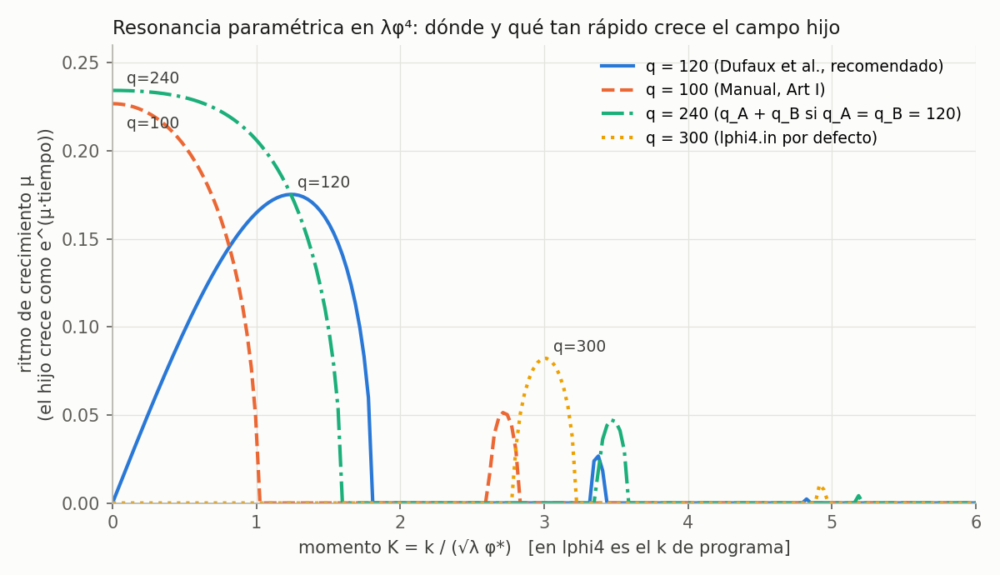

Qué valores usan los autores, por qué, qué dicen las observaciones,
y cómo elegir los parámetros para que lphi4, lphi4U1 y
lphi4SU2U1 se comparen de igual a igual.
¿No sos de física? La bitácora explica el
proyecto desde cero. Las cuentas de esta página están en
code/analisis_parametros.py, y cada
número está registrado en provenance/.
La tabla final tiene todos los valores.
| Parámetro | Qué es, en palabras simples | Qué cambia en el espectro de GWs |
|---|---|---|
\(\lambda\) (lambda) | Qué tan "empinado" es el potencial del inflatón. Fija la escala de energía de todo el proceso. | Casi sólo la frecuencia de las ondas hoy (\(f\propto\lambda^{1/4}\)). La forma del espectro no cambia (ver §4). |
\(q\) (q, qG, y el \(q_A,q_B\) que sale de gU1s, gSU2s) | Qué tan fuerte "empuja" el inflatón al campo hijo en cada oscilación: el acoplamiento medido en las unidades naturales del problema, \(q=g^2/\lambda\). | Dónde queda el pico (\(k_*\sim q^{1/4}\sqrt\lambda\,\varphi_*\)) y qué tan rápido se forma. Es el parámetro que más importa. |
| Amplitud y velocidad iniciales del inflatón | Dónde y a qué velocidad está el inflatón cuando termina la inflación. | La energía total disponible. Tiene que ser la misma en los tres modelos. |
N, kIR | Cuántos puntos tiene la grilla por lado, y el tamaño de la caja (kIR = 2π/tamaño). | Qué rango de frecuencias se ve. La caja tiene que ser más grande que la escala del pico, y los puntos tienen que alcanzar para lo que se genera después, a escalas más chicas. |
dt, tMax | El paso de tiempo y cuánto dura la simulación. | Hay que llegar a la etapa en que el espectro deja de cambiar. |
kCutOff | Hasta qué escala se siembra el "ruido" cuántico inicial. | Poco, siempre que cubra la banda de resonancia. |
Todo lo que sigue sale de los papers de bibliografía/
y de los .in que trae CosmoLattice. En la columna "por qué" puse lo que dicen
los propios autores. Cuando no lo dicen, lo aclaro.
lphi4: el control (λφ⁴ + un hijo escalar)| Fuente | λ | q | Estado inicial | Red | Por qué eligieron eso |
|---|---|---|---|---|---|
| Dufaux et al. 2007 0707.0875, §VI |
10⁻¹⁴ | 1.2, 120, 128, 1130 (principal: 120) |
φ₀ ≈ 0.342 MPl | 256³, hasta x = 240 | λ, "de la normalización de las anisotropías del CMB". q ≫ 1 porque λ es muy chico, así que la resonancia es ancha. q = 128 = 2·8² es un caso especial en el que el pico se corre a k → 0. Es el cálculo de referencia de GWs para este modelo: para q = 120 obtienen h²ΩGW ~ 3×10⁻¹¹ a f ~ 7×10⁷ Hz, y encuentran que el pico depende poco de q. |
| Manual v1 2102.01031, §4.3 |
9×10⁻¹⁴ | 100 | 7.42675e18 GeV −6.2969e30 GeV² | N = 32, kIR = 0.75, dt = 0.01, tMax = 300 | Es el ejemplo pedagógico del manual. Justifican f*, ω* y α (amplitud y frecuencia al final de la inflación), pero no los valores de q ni de la red. N = 32 es para que corra rápido. |
CosmoLattice 2.0lphi4.in |
9×10⁻¹⁴ | 300 | 5.6964e18 GeV −4.86735e30 GeV² | N = 64, kIR = 0.7, dt = 0.01, tMax = 10, sin GWs | No está documentado. El paper de la v2.0 usa lphi4 sólo como prueba de rendimiento. Encontré de dónde sale el estado inicial: es exactamente el final de la inflación (εH = 1) para λ = 9×10⁻¹⁴ (ver §4). tMax = 10 no llega ni al final de la resonancia. |
| Zhou et al. 2026 2605.04670 (otro modelo, mismo inflatón) |
10⁻¹³ | qφh = 100 (viable: 10–10⁴) |
— | N = 256, kIR = 0.75, dt = 0.01, kCutOff = 4 | Usan CosmoLattice para GWs. Fijan λ y varían q. Eligen la red "para que las escalas físicas queden lejos de los cortes IR y UV", y verifican que el resultado no cambia al subir N ni al achicar kIR. |
lphi4U1: el inflatón con carga U(1)| Fuente | λ | qA | Estado inicial | Red | Por qué eligieron eso |
|---|---|---|---|---|---|
| Art I, §8.2, tabla 1 2006.15122 |
Λ⁴ = 4.3×10⁶⁵ GeV⁴, M = 10 mp (λef ≈ 1.2×10⁻¹²) | 100 | fin de slow-roll, φ* (ec. 459) | N = 128, kIR = 0.6, dt = 0.01 | El potencial es un α-attractor que, cerca del mínimo, es λφ⁴. M = 10 mp "garantiza que la inflación termina en la región de curvatura positiva". qA "para tener resonancia paramétrica ancha". N y kIR "para resolver el crecimiento IR y la propagación posterior al UV". El retroefecto llega en η ≈ 40. No calculan GWs. |
CosmoLattice 2.0lphi4U1.in |
9×10⁻¹⁴ | ≈ 1370 (gU1s = 1.11037e−5) |
|φ*| = 5.6964e18 | N = 64, kIR = 0.6, dt = 0.01, kCutOff = 3, tMax = 10 | No está documentado. Como ya vimos en la página teórica, arranca con 4 veces la energía del control. |
| Dufaux, Figueroa & García-Bellido 2010 1006.0217 (otro modelo: inflación híbrida) |
Modelo de Higgs abeliano con transición taquiónica, no resonancia paramétrica. Sus parámetros no se trasladan directamente a los nuestros. | Es el precedente más cercano de GWs con un campo U(1) en el recalentamiento. Encuentran que el campo de gauge deja picos nuevos en el espectro, a frecuencias ligadas a las masas del problema, y asociados a cuerdas cósmicas. Es lo que conviene buscar en nuestros espectros. | |||
lphi4SU2U1: el inflatón con carga SU(2)×U(1)| Fuente | λ | q de cada canal | Estado inicial | Red | Por qué eligieron eso |
|---|---|---|---|---|---|
| Art I, §8.3, tabla 1 | Λ⁴ = 4.3×10⁶⁵ GeV⁴, M = 10 mp | qA = qB = q* = 100 (hijo χ también con q*) |
fin de slow-roll | N = 128, kIR = 0.6, dt = 0.01 | "Fijamos qA = qB = q* con fines ilustrativos, con q* > 1 para tener resonancia ancha en todos los sectores". Los mismos autores advierten que, con los dos campos gauge, estos resuenan juntos con qef = qA + qB (ver §6). |
Manual v1 y CosmoLattice 2.0lphi4SU2U1.in |
9×10⁻¹⁴ | qA = qB ≈ 1370 qG = qH = 50 |
|Φ*| = 5.25151e18 | N = 128, kIR = 0.75, kCutOff = 6, dt = 0.01, tMax = 10 | El Manual explica el potencial (ec. 90), pero no los valores. Algo que encontré: ese |Φ*| × √2 es exactamente el inflatón de lphi4.in del Manual v1. Este modelo estaba emparejado con el control de la v1, que arrancaba antes del final de la inflación (εH = 0.67), no con el de la v2.0. gSU2s = 2·gU1s hace qA = qB, como en el Art I. |
| Tranberg et al. 2017 1706.02365 (otro modelo: transición taquiónica) |
Valores del Modelo Estándar: λ = 0.13 y g = 0.65. También λ = 0.001 y 0.01, para separar la escala del Higgs de la del W. | — | Para comparar U(1) con SU(2) igualan las masas a nivel árbol: el mismo criterio de "un solo cambio por vez" que usamos acá. Encuentran dos picos (masas del Higgs y del W). Los campos no abelianos reducen la producción de GWs, los abelianos la aumentan, y los campos gauge suprimen el espectro en el IR. | ||
Adshead, Giblin & Weiner (2018) y García-Bellido et al. (2007, 2008) estudian acoplamientos distintos (dilatónico o axial) o inflación híbrida. Sirven como contexto, pero no aportan valores trasladables a estos tres modelos.
| Modelo de inflación | e-folds N | λ (o λ efectiva cerca del mínimo) | ns | r | ¿Permitido? |
|---|---|---|---|---|---|
| λφ⁴ puro | 50 / 55 / 60 | 2.34e−13 / 1.77e−13 / 1.37e−13 | 0.941 / 0.946 / 0.951 | 0.31 / 0.29 / 0.26 | No. Planck mide ns = 0.9649 ± 0.0042, y BICEP/Keck exige r < 0.036. |
| α-attractor, p = 4, M = 5 mp | 60 | 2.83e−12 | 0.966 | 0.013 | Sí |
| α-attractor, p = 4, M = 8.5 mp | 60 | 1.07e−12 | 0.965 | 0.034 | Justo en el límite |
| α-attractor, p = 4, M = 10 mp (Art I) | 50 / 60 | 1.19e−12 / 8.07e−13 | 0.957 / 0.964 | 0.062 / 0.045 | Hoy no: r > 0.036. El Art II ya lo señala (M ≲ 8.5 mp). |
Cálculo en slow-roll con As = 2.1×10⁻⁹ (lphi4_puro,
t_model). Como validación, reproduce el Λ⁴ del Art II (p = 2, M = 5 mp,
N = 60) con un 15 % de diferencia (8.5 contra 9.84 ×10⁻¹⁰ mp⁴), y el de la
tabla 1 del Art I para p = 4, M = 10 mp con N = 50 (4.2 contra 4.3 ×10⁶⁵ GeV⁴).
La diferencia viene de cómo se cuentan los e-folds y del valor de As.
Mucho menos de lo que parece. En variables de programa el potencial queda \(\widetilde V=\tilde\varphi^4/4+\tfrac q2\tilde\varphi^2\tilde\chi^2\): λ desaparece de las ecuaciones (ver la página teórica). Queda sólo en dos lugares:
Además, el estado del inflatón al final de la inflación, en unidades de mp, no
depende de λ: integrando el fondo exacto hasta εH = 1 da
\(\varphi_* = 2.33938\,m_p\) y \(\dot\varphi_* = -2.73636\,\sqrt\lambda\,m_p^2\). Con
λ = 9×10⁻¹⁴ eso es 5.6964×10¹⁸ GeV y −4.86735×10³⁰ GeV², los valores de
lphi4.in dígito por dígito.
.in y con el orden de la literatura (Dufaux 10⁻¹⁴, Zhou 10⁻¹³), y el estado
inicial correcto ya está calculado. Una corrida adicional con λ = 10⁻¹² serviría como
prueba de robustez. Para eso hay que reescalar sólo la velocidad inicial, por √(10⁻¹²/9×10⁻¹⁴).
En la fase lineal, cada modo del hijo cumple una ecuación de Lamé
\(X''+(K^2+q\,\mathrm{cn}^2(x,\tfrac12))X=0\) (Dufaux et al., ec. 68). Su solución crece
como \(e^{\mu x}\), donde μ es el exponente de Floquet. Lo calculé para cada q candidato
(banda_principal):

figura_bandas en code/analisis_parametros.py.| q | De dónde sale | Pico en K* | μ máximo | Banda (μ > μmáx/2) | Lectura |
|---|---|---|---|---|---|
| 120 | Dufaux et al. (principal) | 1.24 | 0.175 | 0.45 – 1.72 | Resonancia fuerte, con el pico en una escala bien definida dentro de la caja. |
| 100 | Manual v1, Art I | 0 | 0.227 | 0 – 0.89 | Más rápida, pero crece más donde K → 0, a la escala de la caja: el resultado depende de kIR. |
| 128 | Dufaux et al. (caso especial 2·8²) | 0 | 0.238 | 0 – 1.13 | Igual que 100. |
| 300 | lphi4.in por defecto | 3.00 | 0.082 | 2.85 – 3.16 | Débil y angosta. Cae justo en el borde de una banda. |
| 1370 | .in gauge por defecto | 0 | 0.171 | 0 – 0.99 | Crecimiento a la escala de la caja. |
Por qué pasa esto: el modo K = 0 es inestable sólo cuando \(n(2n-1)<q<n(2n+1)\), es decir 1–3, 6–10, 15–21, …, 91–105, 120–136, …, 276–300. En el centro de cada banda (q = 2n²) crece con μ = 0.238. Lo verifiqué para n = 1, 7, 8 y 12. q = 120 y q = 300 caen justo en bordes: 120 en el borde inferior de la banda 8, y el pico se corre a K finito con μ alto; 300 en el borde superior de la banda 12, y la resonancia casi se apaga.
lphi4 se puede validar contra un
resultado publicado. Su pico está en una escala finita, así que no depende del tamaño de la
caja. Y la resonancia es fuerte. En cambio, q = 300 resuena poco, y q = 100, 128 o 1370
ponen el crecimiento en la escala de la caja.
En el Art I (ec. 476) cada campo gauge tiene su propio parámetro de resonancia: \(q_A = g_A^2/\lambda\) y \(q_B = g_B^2/(4\lambda)\). Pero los mismos autores dicen que, cuando el inflatón se acopla a los dos, el término cruzado de la derivada covariante acopla sus ecuaciones y resuenan juntos con \(q_{\rm ef}=q_A+q_B\). Anuncian el detalle para un trabajo posterior, que no está en la bibliografía.
| Opción | qA, qB | qef | Resonancia gauge | ¿Comparable con el control (q = 120)? |
|---|---|---|---|---|
| La del Art I | 120, 120 | 240 | K* = 0, μ = 0.234 (otra banda) | No: el pico cambia de lugar. |
| Repartida (recomendada) | 60, 60 | 120 | K* = 1.24, μ = 0.175 (igual que el control) | Sí, si vale qef = qA + qB. |
Si la afirmación sobre qef no valiera y cada sector resonara por separado con q = 60, el pico estaría en K* = 1.73 con μ = 0.107. Las dos hipótesis predicen picos distintos, así que la primera corrida de SU(2)×U(1) decide cuál vale: alcanza con mirar en qué K crecen los campos gauge durante la fase lineal.
Por la misma razón, en lphi4SU2U1 recomiendo apagar los hijos escalares
(qG = qH = 0). Así el único canal que resuena es el gauge, como en los otros dos
modelos. Si se quisiera el diseño del Art I (hijo χ más dos campos gauge), habría que tener
en cuenta que el inflatón reparte la energía entre más canales que en el control.
kIR). La banda de q = 120 va de K = 0.45 a 1.72.
Con kIR = 0.25 entran varios modos de la red dentro de la banda. Con 0.6–0.75
(Art I, Zhou) entrarían apenas uno o dos.N). Con N = 256 el momento máximo es
\(\tfrac{\sqrt3}{2}N\,k_{IR}\approx 55\), unas 45 veces K*. Es margen de sobra
para la cascada hacia escalas chicas después del retroefecto. Es el N de Dufaux y de Zhou.tMax). Dufaux et al. llegan a x = 240 y ven que el
pico de GWs deja de cambiar después de x ≈ 150. Recomiendo tMax = 300 en
lphi4. El tMax = 10 de los .in no alcanza ni para el
retroefecto (η ≈ 40 en el Art I).dt = 0.01): el de todas las fuentes. Con N = 256 y
kIR = 0.25, el espaciado es δx ≈ 0.098, y dt/δx = 0.1 está lejos del límite de estabilidad
1/√3.lphi4U1 y
lphi4SU2U1 el código usa \(\omega_*=\sqrt\lambda\,|\Phi_*|\), que con el
inflatón emparejado es √2 menor que en lphi4. Para que la caja, la resolución y
la duración sean físicamente las mismas: kIR y kCutOff
se multiplican por √2, y dt y tMax se dividen por √2. Al comparar
espectros, el eje de momentos de los modelos gauge se divide por √2 para llevarlo a las
unidades de lphi4.Costo: N = 256 con 30 000 pasos es una corrida larga en CPU, sobre todo para
lphi4SU2U1. Conviene empezar con una corrida piloto con N = 128 y la misma
kIR. Se pierde la mitad del rango UV, pero la fase lineal y el pico se ven
igual.
Cada valor está en las unidades que espera el .in de ese modelo. Todos
salen de recomendacion() en
code/analisis_parametros.py
(python3 code/analisis_parametros.py --tabla).
| Parámetro | lphi4 (control) | lphi4U1 | lphi4SU2U1 |
|---|---|---|---|
| Física | |||
λ (lambda) | 9e-14 | 9e-14 | 9e-14 |
| Amplitud inicial del inflatón (GeV) | initial_amplitudes = 5.6964e18 0 | cmplx_field_initial_norm = 4.02796e18 | SU2Doublet_initial_norm = 4.02796e18 |
| Velocidad inicial (GeV²) | initial_momenta = -4.86735e30 0 | cmplx_momentum_initial_norm = -3.44174e30 | SU2Doublet_initial_momenta_norm = -3.44174e30 |
| Otros campos, homogéneos | hijo χ en 0 | — | initial_amplitudes = 0, initial_momenta = 0, cmplx_field_initial_norm = 0, cmplx_momentum_initial_norm = 0 |
| Hijo escalar | q = 120 | no tiene | qG = 0, qH = 0 |
| Acoplamiento U(1) | — | gU1s = 3.28634e-6 CSU1Charges = 1 | gU1s = 2.32379e-6 SU2DoubletU1Charges = 1, CSU1Charges = 1 |
| Acoplamiento SU(2) | — | — | gSU2s = 4.64758e-6 SU2DoubletSU2Charges = 1 |
| q del canal resonante | 120 (χ) | 120 (qA) | 120 (qA + qB = 60 + 60) |
| Resonancia esperada | K* ≈ 1.24, μ ≈ 0.175 | la misma (ec. 475–476) | la misma, si vale qef |
| Red y tiempo (unidades de programa de cada modelo) | |||
N | 256 | 256 | 256 |
kIR | 0.25 | 0.353553 | 0.353553 |
kCutOff | 4 | 5.65685 | 5.65685 |
dt | 0.01 | 0.00707107 | 0.00707107 |
tMax | 300 | 212.132 | 212.132 |
expansion, evolver | true, VV2 | true, VV2 | true, VV2 |
withGWs | true | true | true |
Derivados (no se escriben en el .in; sirven para comparar) | |||
| f* (GeV) | 5.6964e18 | 4.02796e18 | 4.02796e18 |
| ω* (GeV) | 1.70892e12 | 1.20839e12 | 1.20839e12 |
| Para comparar espectros, K = | k de programa | k de programa / √2 | k de programa / √2 |
Si se prefiere el diseño del Art I en SU(2)×U(1) (qA = qB = 120):
gU1s = 3.28634e-6 y gSU2s = 6.57267e-6. Las cargas se dejan en 1, porque sólo importa el
producto g·Q. En lphi4SU2U1, el escalar complejo hijo queda con carga U(1)
pero sin acoplamiento al inflatón: sólo tiene fluctuaciones de vacío.